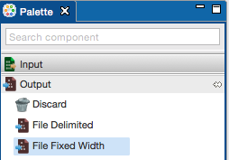
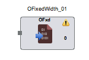

Output File Fixed Width
Output File Fixed Width as the name suggests writes a fixed width file as Output and is present under the Output category in the component palette.span>
This component is used to writes a fixed width text file. It accepts the length for each record field from the user in the component properties and has a single input port. The execution fails if the accepted record field length does not match with the actual length.
The Output File Fixed Width component can be easily distinguished in the component palette.

An enlarged version of the same is depicted when dragged on the canvas.

For further reference click on the links below: